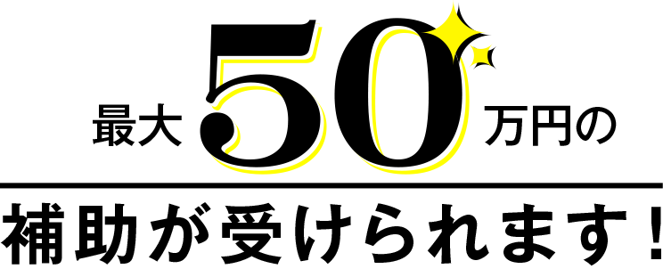
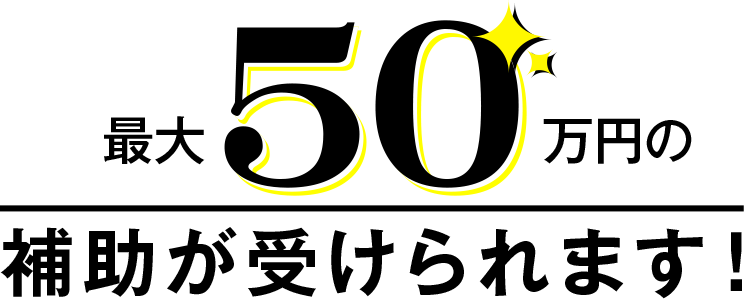

カナミックの介護業務支援ソフト導入をご検討中の方に

三次申請受付中！
カナミック導入済みのお客さまも補助金の対象になります
※オプションの追加、カスタマイズ開発など

三次申請受付中！
※オプションの追加、カスタマイズ開発など
カナミックネットワークは
経済産業省・ＩＴ導入補助金事務局に
採択された申請認定事業者です。
申請の手続きでご不明な点をしっかりサポート。
過去の採択実績も多数！
不安をお持ちの事業所さまも安心してお申込みください。
土日祝祭日、年末年始、GW、夏季休暇時は休業となります。
毎月10日（国保請求最終日）直前の土曜日は通常通り対応を行なっております。